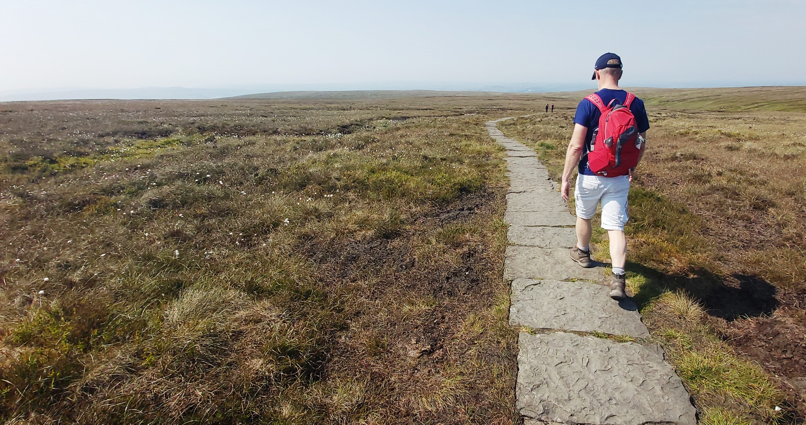
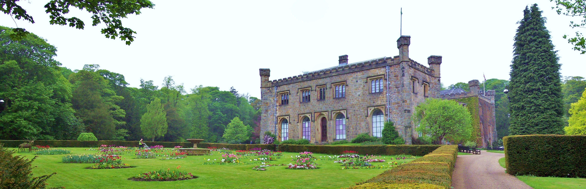
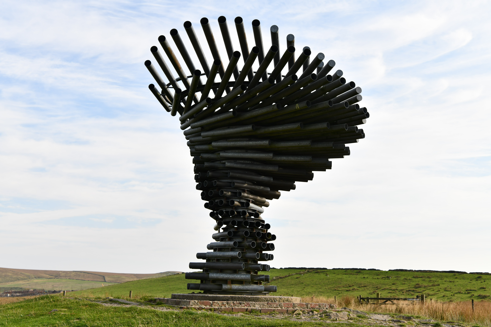

Burnley
Use the town for shops, food, transport links and practical errands before or after days out.
 The Bungalow Burnley
The Bungalow Burnley
Burnley and beyond
Stay close to Burnley's parks, heritage and everyday conveniences, then head out towards moorland, villages and wider Lancashire.
Nearby ideas
Use the town for shops, food, transport links and practical errands before or after days out.
A strong local option for walks, open space and heritage, with routes that suit slower days.
A landmark Lancashire walk with big views. Check route conditions and weather before setting off.
Plan scenic drives, villages and countryside routes across one of the North West’s most distinctive landscapes.
Set aside a longer day for market towns, walking routes and limestone scenery beyond Lancashire.
The public listing highlights cycling and walking as popular local activities. Bring suitable kit for changing weather.
Local landmarks
The Bungalow works for guests who want self-catering accommodation near Burnley, with countryside, heritage and viewpoints close enough for half-day plans.



Before you go
Countryside plans can change quickly. Check the forecast, daylight, parking, attraction opening times and accessibility information before leaving the bungalow.
Detailed directions and property access information should come from your confirmed booking details rather than this public website.